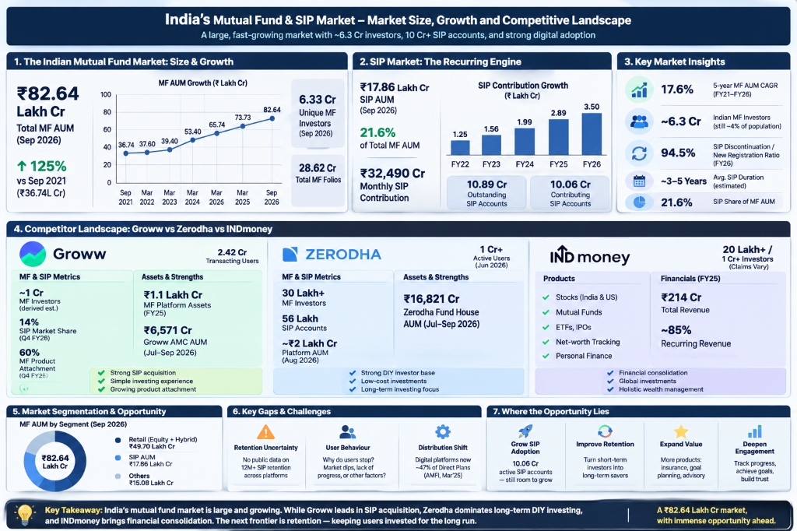

Goal: Retain first-time mutual fund investors with an active SIP (≥1 debit in last 30 days) 12 months after starting.
Despite monthly inflows crossing ₹32,490 Cr, ~95 SIPs stop for every 100 started. Groww leads acquisition, but suffers disproportionately from early retail churn.
• Zero Stock/Fund Recommendations: Unbiased, platform-agnostic, SEBI RIA compliant.
• Zero Fear, FOMO, or Urgency Tactics: Strictly non-coercive habit loops.
Strategic Leverage Takeaway: 85% of early churn is concentrated in Effort-Reward Disillusionment (invisible compounding) and Unanchored Capital Plunder (fungible cash raiding). Solving these two unlocks the 48% retention target.
Aggregated public Reddit threads (r/IndiaInvestments), Play Store reviews, Twitter grievances, and exit surveys.
PII masking, account number removal, and noise reduction across conversational transcripts.
Multi-dimensional vector grouping into 4 behavioral friction buckets and intent discovery.
Validated against 20 hand-labeled golden ground-truth items with strict non-advisory constraints.
Detects the unspoken emotional gap between monthly sacrifice and invisible progress. When a user writes "SIP is useless, cancelled", the engine uncovers the true underlying driver: after 6 months of discipline, a ₹12,000 balance showed ₹12,040, triggering expectation disconfirmation.
Core Discovery: First-time investors do not quit because the Nifty 50 drops 10%. They quit because after 6 months of sacrificing ₹2,000/month, their statement looks like an electricity bill showing +₹35, and the money has no emotional goal protecting it from lifestyle spending.
Target Segment: "Early-Career Climbers" (Ages 22–27, ₹30k–₹65k salary, ₹1k–₹3k monthly SIP on Groww, 0 prior equity experience). 6 in-depth qualitative interviews conducted under strict privacy protocols.
"Invested ₹7,500; value was ₹7,485 (-₹15). Statements show cold NAV numbers. I felt like I was making monthly sacrifices for money that does nothing. I paused it."
"Accumulated ₹8,000 in a generic 'Nifty Index' fund. Raided the whole thing for an Udaipur wedding. It had no specific purpose, so it was just easy cash."
"Invested ₹12,000; value was ₹12,060. Every month ₹2,000 was deducted with zero positive feedback. It felt like an unwanted utility bill, so I stopped it."
"Earmarked it as 'Freedom Fund' from Day 1; brother explained unit accumulation during Month 4 dip. Survived because of an emotional goal anchor."
"Bike broke down; raided ₹6,000 from his mutual fund because 'it made only ₹30 in 6 months and wasn't tied to any goal'."
"Invested ₹22,500 over 9 months; value ₹22,650. Statements looked like electricity bills; liquidated to buy an iPad."
Business Metric (M12 Churn) ➔ Outcomes (Milestone Conviction + Purpose Anchoring) ➔ AI Discovery (76% Progress/Goal Gaps) ➔ Primary Research (Flat Statements & Easy Raiding) ➔ Sharpened Problem Definition
First-time mutual fund investors abandon their SIP within 12 months because the mathematical invisibility of Year-1 compounding creates an "Effort-Reward Imbalance"—making monthly sacrifices feel unrewarding through cold, flat statements—while the absence of goal-anchored mental accounting leaves this unrewarding capital exposed as the first fungible asset to be paused or raided when everyday life demands cash.
Value Creation: Protects hard-earned savings from impulsive discretionary raiding and replaces statement disillusionment with milestone pride, bridging the critical Year-1 gap.
Prominent Disclaimer: "Groww Anchor & Milestone is a non-advisory educational companion. It does not provide investment recommendations. Mutual fund investments are subject to market risks."
Milestone statement reframed -₹15 into 30% of emergency buffer and 6.2 extra units.
Quote: "When I saw I had built 30% of my safety net, I felt proud instead of foolish. Looking at units made me realize I hadn't wasted money."
Behavioral mirror showed 14-month goal delay; Aarav chose to cut hotel expenses instead of killing his Home Downpayment goal.
Quote: "Seeing 'First Home Downpayment' and the 14-month delay made me pause. I chose to cut my hotel budget rather than kill my goal."
Milestone copilot explained Year-1 foundation phase; replaced monthly bill feeling with investment pride.
Quote: "Having an app that actually explains what this sacrifice is building makes it feel like an investment, not a tax."
1. Instant Liquidity Reassurance: Added visible badge: "100% Liquid • No Lock-in • You are in control" on all goal screens.
2. Dynamic Re-Pacing: Enabled 1-tap milestone renaming and target adjustment.
Executive Summary: By replacing cold, underwhelming statements with visible milestone progress, and anchoring generic funds into protected life goals, Groww transforms the 94.5% leaky bucket into a compounding wealth engine for first-time retail India.